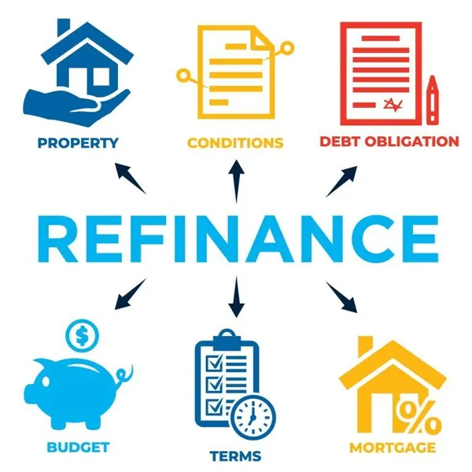

Mortgage Refinance · McKinney, Texas
Mortgage Refinance in McKinney, TX
I'm Bond Peter Njoku (NMLS #2670329), your McKinney refinance specialist. McKinney homeowners bought aggressively during the 2020–2023 run-up — and many are watching rates closely, knowing a refinance window could save them hundreds per month when the right moment arrives.
